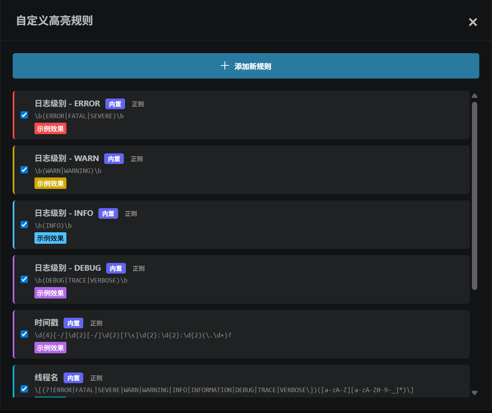
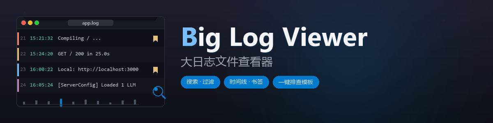

界面预览
主界面、书签 / 注释、排查模板编辑器




流式读取 + 虚拟滚动,几 GB 的服务器日志也能秒开;多关键词搜索、时间线导航、书签/注释、可重跑的排查模板——线上问题排查需要的工具,这里都齐了。
code --install-extension wake.big-log-viewer

但当日志文件达到几百 MB 甚至几 GB 时,VSCode 默认的文本编辑器就不堪重负了
为线上日志排查量身打造,而不是简单的文本编辑器
文件读取全程流式,不把整个文件读进内存,多 GB 也不会撑爆扩展进程;虚拟滚动只渲染屏幕内的行,加载进度真实可见,不是转圈假动画。
多关键词空格分隔即 AND 匹配;正则模式;高级搜索是查询构建器,关键词 / 线程名 / 类名 / 方法名 / 级别 / 时间范围,条件行之间灵活切换「且/或」。
双击行加书签,右键加注释;支持命名书签、批量导出书签日志;书签行整行高亮,列表集中管理,方便团队协作分析。
把全文件按时间采样画成分布图,点击时间块直接跳转;翻页、跳转时高亮跟着走,采样密度可调(20–1000)。
把固定排查流程存成模板,自动重跑;查询 / 筛选 / 打书签 / 加注释四种动作,${参数} 占位复用,可视化与 JSON 双形式编辑。
默认(随 VSCode)、NEON.CYBER 赛博朋克、AURORA.GLASS 玻璃拟态、HOLO.PRISM 全息棱镜,切换立即生效,不丢搜索状态和滚动位置。
连续重复的行合并成一组(忽略时间戳差异),折叠徽标显示当前搜索的命中数;点击展开明细,排查刷屏更省眼。
按时间或行号删除 / 保留指定范围的日志,直接修改原文件。操作前请备份重要日志。
主界面、书签 / 注释、排查模板编辑器

查看器本身是通用文本查看器,任何 .log / .txt 都能打开、搜索、加书签
| 日志组件 | 时间戳 | 级别 |
|---|---|---|
| Logback / Log4j / Log4j2 / SLF4J、Spring Boot 默认格式 | ✓ | ✓ |
| log4net / NLog(.NET) | ✓ | ✓ |
Python logging(%(asctime)s 格式)、Gunicorn | ✓ | ✓ |
| logrus、zap 控制台格式(Go) | ✓ | ✓ |
| Rails、Laravel / Monolog、winston 文本格式 | ✓ | ✓ |
| Go 标准库 log、IIS W3C、syslog RFC5424 | ✓ | — |
| Docker json-file、bunyan(JSON 内含 ISO 时间字段) | ✓ | — |
| Tomcat catalina(JUL)、JBoss / WildFly 默认 pattern | — | ✓ |
| Serilog Console 默认、Apache error log | — | ✓ |
Python logging 默认格式、uvicorn(INFO: 前缀) | — | ✓ |
nginx / Apache access log(01/Jan/2024 英文月份日期) | — | — |
识别不到时间戳只影响时间范围过滤、时间线导航、按时间裁剪三类功能,打开、搜索、级别过滤、书签、注释全部照常可用。
所有功能都可从 VSCode 命令面板(Ctrl+Shift+P)调用
日志查看器: 打开大日志文件
选择一个日志文件在查看器中打开
日志查看器: 高级搜索
打开查询构建器
日志查看器: 排查模板
打开排查模板管理
日志查看器: 书签管理
查看 / 编辑 / 导出书签
日志查看器: 注释管理
查看 / 编辑 / 删除注释
日志查看器: 跳转到行号
输入行号直接跳转
日志查看器: 显示日志统计
总行数、级别分布、时间范围
日志查看器: 刷新日志文件
文件被外部更新后重新读取
日志查看器: 按时间删除日志
直接修改原文件,慎用
日志查看器: 按行数删除日志
直接修改原文件,慎用
在「⋯ 更多 → 设置」面板里切换,立即生效,选择会写入 VSCode 用户配置
跟随当前 VSCode 编辑器主题,适合日常使用
纯黑底、霓虹青 / 品红 / 琥珀,扫描线与 CRT 暗角
深蓝紫渐变、极光动效、毛玻璃质感
炭灰底、全息渐变描边,仪表盘质感
两种安装方式:从 VSCode 扩展市场装,或者从源码打包
在扩展面板搜索「Big Log Viewer」或「大日志文件查看器」安装,或直接执行:
code --install-extension wake.big-log-viewer
要求:VSCode 1.75 或更高版本
git clone https://github.com/uwakeme/large_log_check.git
cd large_log_check
npm install
npm run package打包会在项目根目录生成 .vsix 文件,在 VSCode 扩展面板「⋯ → 从 VSIX 安装」里选择它即可。
在资源管理器里右键任意 .log / .txt 文件,选择「打开大日志文件」。进度条走完就是完整日志,可以直接搜了。
每个文件在独立面板中打开,书签、注释、搜索状态都按面板隔离,关闭面板即释放资源。
欢迎提 Issue 和 PR · MIT 协议开源 · 仓库约定:新功能的 PR 要在同一个提交里更新 README 和 CHANGELOG